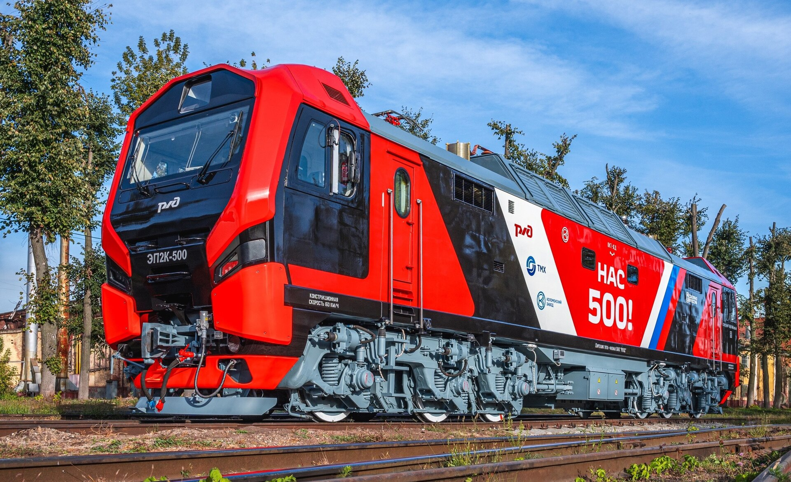
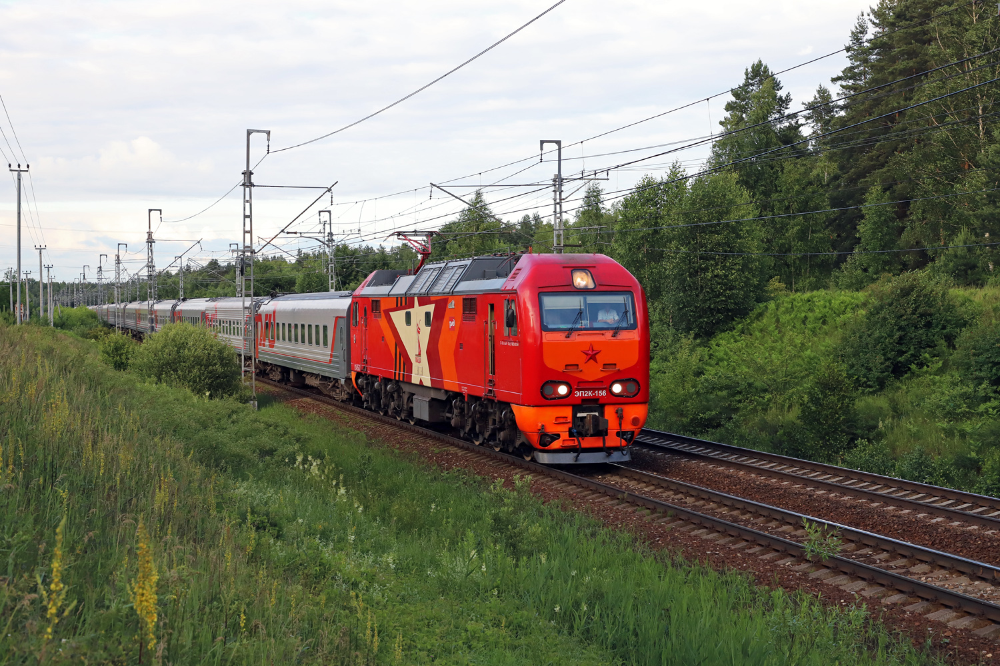
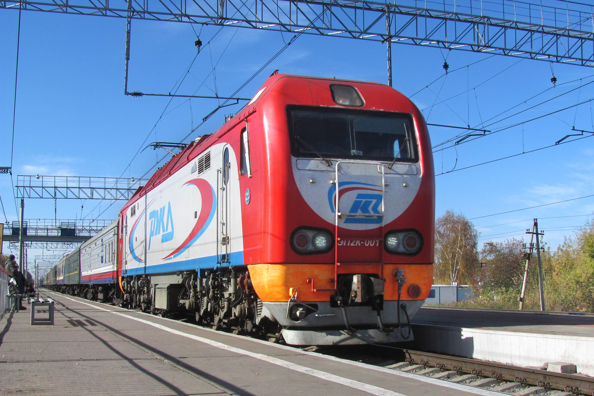

ЭП2К
ЭП2К (Электровоз Пассажирский, тип 2, Коллекторный тяговый привод) — российский пассажирский шестиосный электровоз постоянного тока, выпускаемый Коломенским заводом. Первый серийный пассажирский электровоз постоянного тока в истории российского электровозостроения.
Создан для замены устаревших чехословацких локомотивов ЧС2 и ЧС2Т. Механическая часть выполнена на базе тепловоза ТЭП70БС. Электрическую часть выпускают НЭВЗ и Калужский научно-производственный электромеханический завод.
Производство
| Параметр | Значение |
|---|---|
| Страна постройки | Россия 🇷🇺 |
| Заводы | Коломенский (мех. часть и сборка), НЭВЗ (электрооборудование) |
| Производитель | Трансмашхолдинг |
| Годы постройки | 2006 (опытный образец), с 2008 (серийное производство) |
| Всего построено | 517 (на май 2026) |
| Нумерация | 001 — 517 |
| Главный конструктор | Анатолий Подопросветов |
Выпуск по годам
| Год выпуска | Количество | Номера |
|---|---|---|
| 2006 | 1 | 001 |
| 2007 | 1 | 002 |
| 2008 | 25 | 003—027 |
| 2009 | 30 | 028—057 |
| 2010 | 35 | 058—092 |
| 2011 | 40 | 093—132 |
| 2012 | 41 | 133—173 |
| 2013 | 51 | 174—224 |
| 2014 | 53 | 225—277 |
| 2015 | 35 | 278—312 |
| 2016 | 35 | 313—347 |
| 2017 | 14 | 348—361 |
| 2018 | 29 | 362—390 |
| 2019 | 23 | 391—413 |
| 2020 | 27 | 414—440 |
| 2021 | 7 | 441—447 |
| 2022 | 15 | 448—461 |
| 2023 | 22 | 462—483 |
| 2024 | 22 | 484—505 |
| 2025 | 8 | 506—513 |
| 2026 | 4 | 514—517 |
| Всего | 517 | 001—517 |
Важно: В процессе выпуска в конструкцию локомотивов вносились небольшие изменения. Электровозы по номер 036, за исключением 029 и 031, выходили с завода в красно-бело-голубом окрасе; 029, 031, 037—100 и 102—108 — в красном; 109—499 и 505 — в корпоративной красно-серой окраске РЖД. С номера 500 начал применяться новый дизайн лобовой части в стиле «ДНК».
Технические характеристики
| Параметр | Значение |
|---|---|
| Род службы | Пассажирский |
| Род тока и напряжение | Постоянный, 3 кВ |
| Осевая формула | 3₀-3₀ |
| Тип токосъёма | Верхний (полупантограф) |
| Полный служебный вес | 135 т |
| Нагрузка от движущих осей на рельсы | 221 кН (22,54 тс) |
| Габарит | 1-Т |
| Длина локомотива | 21 800 мм |
| Ширина | 3288 мм |
| Максимальная высота | 5100 мм (опущенный токоприёмник) |
| Полная колёсная база | 16 850 мм |
| Колёсная база тележек | 4600 мм |
| Диаметр колёс | 1250 мм |
| Наименьший радиус проходимых кривых | 125 м |
| Ширина колеи | 1520 мм |
| Система регулирования | Реостатно-контакторная |
| Тип ТЭД | ЭД153У1, ДТК-800К, ДТК-800КС, коллекторные |
| Подвешивание ТЭД | Опорно-рамное 3 класса |
| Передаточное отношение редуктора | 93 : 38 = 2,45 |
| Сила тяги при трогании с места | 302 кН (30,8 тс) |
| Часовая мощность ТЭД | 6 × 800 = 4800 кВт |
| Сила тяги часового режима | 192,8 кН (19,7 тс) |
| Скорость часового режима | 87,8 км/ч |
| Длительная мощность ТЭД | 6 × 720 = 4320 кВт |
| Сила тяги длительного режима | 167,4 кН (17,06 тс) |
| Скорость длительного режима | 91 км/ч |
| Сила тяги при максимальной скорости | 91,4 кН (9,3 тс) |
| Конструкционная скорость | 160 км/ч |
| Электрическое торможение | Реостатное |
| Мощность тормозных реостатов | 4000 кВт |
| Тормозное усилие | 210 кН (21,41 тс) |
| КПД | 0,88 |
| Системы безопасности | КЛУБ-У, ТСКБМ, САУТ |
| Мощность системы электроотопления | 1200 кВт |
Особенности конструкции
🛞 Тележки
Две трёхосные тележки с двухступенчатым рессорным подвешиванием и подвешиванием двигателей III класса (подрессоривание и двигателя, и редуктора) системы французской фирмы Альстом. В целом тележки схожи с тележками ТЭП70.
🚪 Кузов
Несущий раскосной конструкции с приварной обшивкой, с двумя кабинами машиниста. Лобовая часть обеспечивает безопасность локомотивной бригады при столкновении с препятствиями со скоростью до 20 км/ч.
⚡ Тяговый привод
Коллекторные двигатели ЭД153У1 или ДТК-800КСУ1 мощностью 800 кВт при частоте вращения 945 об/мин. Компенсированная шестиполюсная реверсивная электрическая машина последовательного возбуждения.
🎛️ Токоприёмник
Асимметричный полупантограф SBS 2T типа 8WL0 188—6YH47-2 с пневматическим приводом. В настоящее время устанавливаются российские токоприёмники ТАсС-16-02.
🔌 Ходовые позиции
21-я: последовательное соединение шести двигателей; 38-я: последовательно-параллельное; 51-я: параллельное. Пять ступеней ослабления возбуждения: 80, 66, 54, 46, 40 %.
❄️ Охлаждение
Тяговые двигатели охлаждаются двумя установками ЦВС (централизованного воздухоснабжения), по одной на тележку. Вентиляторы охлаждения пуско-тормозного реостата приводятся коллекторными двигателями.
История создания и выпуска
К началу 2000-х годов на электрифицированных железных дорогах России основой парка пассажирских электровозов являлись локомотивы ЧС производства чехословацкого завода Škoda. Многие из них были выпущены в 1960-х и 1970-х годах и потому были в значительной степени изношены, а также морально устарели. Поэтому, наряду с глубокой модернизацией электровозов ЧС2 на Ярославском электровозоремонтном заводе, РЖД приняло решение о проектировании новых локомотивов российского производства.
Контракт с Коломенским заводом
ОАО «РЖД» заключило контракт с Коломенским заводом на создание нового шестиосного пассажирского электровоза, по техническим характеристикам схожего с электровозами ЧС2Т. Электровоз требовалось создать в сжатые сроки к концу 2005 года.
Проектные работы завершены
Специалистами завода было предложено за основу конструкции механической части использовать конструкцию нового перспективного тепловоза ТЭП70БС. Главным конструктором локомотива стал Анатолий Подопросветов. Проектные работы завершены в 2005 году.
Сборка первого опытного образца
Сборка электровоза ЭП2К-001 завершена. 3 февраля состоялась его презентация на заводе. Электровоз получил оригинальную красно-белую окраску с голубой полосой.
Первая поездка своим ходом
На электрифицированном участке пути тепловозосборочного цеха электровоз впервые проехал своим ходом. В испытаниях принимал участие главный конструктор Анатолий Подопросветов.
Второй электровоз
Выпущен второй электровоз, который также был направлен в опытную эксплуатацию. Он имел немного изменённую схему окраски с увеличением количества белого цвета и некоторые изменения в оборудовании — вместо электромашинного преобразователя собственных нужд был применён более экономичный статический преобразователь.
Начало серийного выпуска
Завод начал серийный выпуск локомотивов этой серии, продолжающийся по настоящее время. Электровозы поступили в депо Барабинск.
Юбилейный электровоз № 500
Завод выпустил юбилейный электровоз под номером 500 с новым дизайном лобовой части в стиле «ДНК». Кабина получила новые диагональные угловые обводы, диагональные узкие светодиодные буферные фонари и утопленный в корпус прожектор трапециевидной формы. С завода электровоз получил эксклюзивную красно-чёрную окраску.
Продолжение выпуска
Выпущены электровозы 506—517. Всего на май 2026 года построено 517 единиц.
Варианты окраски
За всю историю выпуска электровозы ЭП2К получали различные варианты окраски — как заводские, так и фирменные, закреплённые за конкретными поездами или депо.
Заводские, деповские и именные окраски
Опытный
Номер: 001
Первый опытный экземпляр. Оригинальная красно-белая окраска с голубой полосой.
Заводской
Номера: 002; 030; 032
Оригинальная заводская окраска.
«80 лет Победы»
Номера: 249, 156, 127, 017, 078
Тематическая окраска к юбилею Победы.
«Имени Воина-интернационалиста Двухреченского А. В.»
Надпись на кузове.
«ТЧ-8 Санкт-Петербург»
Окраска, характерная для ТЧ-8 (Санкт-Петербург-Пассажирский-Московский).
«ТЧЭ-6 Москва-Сортировочная-Рязанская»
Окраска, характерная для ТЧЭ-6.
«Имени Валерия Ковалева»
Надпись на кузове.
«Имени Бирюкова Виктора Ефимовича»
Надпись на кузове.
«Коломенскому заводу 155 лет»
Юбилейная окраска к 155-летию Коломенского завода.
«150 лет депо Самара»
Юбилейная окраска депо Самара.
«ТЧЭ-10 Самара»
Окраска, характерная для ТЧЭ-10 Самара.
«Новый бренд»
Новая маска и расцветка. Номера: 512–517.
«Коломенский завод»
Ушёл в историю, не был на линии.
Расцветки, закреплённые за фирменными поездами
Эти окраски закреплены за конкретными фирменными поездами. Если локомотив едет с другим поездом — он выглядит уникально.
«Аврора»
Голубо-серо-белая окраска. Номера: 501—504, 506—509.
«Невский экспресс»
Фирменная окраска.
«Гранд-Экспресс»
Малиново-белая окраска. Номера: 238, 271.
«Ночной Экспресс»
Чёрная с золотом. Номера: 273, 376.
«Мегаполис»
Сине-оранжево-жёлтая окраска. Номера: 320, 359.
«Красная Стрела»
Красная окраска с золотой полосой. Номера: 148, 168, 388, 392, 510—511.
Подробнее →Интересный факт: Электровоз 500 с новым дизайном лобовой части получил эксклюзивную юбилейную красно-чёрную окраску. В центре боковых стен нанесена юбилейная надпись «НАС 500!». Электровозы 501—504 и 506—509 получили голубо-серо-белую окраску в стиле фирменного поезда «Аврора».
Эксплуатация и приписка
Подавляющее большинство электровозов ЭП2К (более 230) эксплуатируется в депо Барабинск Западно-Сибирской железной дороги, где они заменили старые изношенные электровозы серии ЧС2. Электровозы обслуживают большую часть сети железных дорог в приуральской и западно-сибирской части России и некоторую часть сети в среднем Поволжье.
Данные по приписке по номерам (на апрель 2025 года)
| Дорога | Депо | Количество | Номера |
|---|---|---|---|
| Западно-Сибирская | Барабинск | 232 | 001—029, 031, 037—117, 119—137, 139—141, 143, 144, 160—165, 167, 169—173, 194—206, 208, 253—268, 274—309, 312, 315-317, 322—324, 328, 329, 334, 335, 339—341, 343—347 |
| Куйбышевская | Самара | 54 | 138, 142, 416—456, 470—480 |
| Московская | Москва-Сортировочная-Рязанская | 109 | 118, 166, 168, 207, 244—252, 310, 311, 313, 314, 318—321, 325—327, 330—333, 336—338, 342, 348—415, 467—469, 494—498, 505 |
| Октябрьская | Санкт-Петербург-Пассажирский-Московский | 119 | 030, 032—036, 145—159, 174—193, 209—243, 269—273, 457—466, 481—493, 500—504, 506—515 |
Фирменные поезда и закреплённые электровозы
«Гранд-Экспресс»
Номера: 238 и 271
Малиново-белая окраска.
«Ночной экспресс»
Номера: 273 и 376
Чёрная с золотом.
«Красная стрела»
Номера: 148, 168, 388 и 392
Красная окраска с золотой полосой.
«Мегаполис»
Номера: 320 и 359
Сине-оранжево-жёлтая.
Интересный факт: За время эксплуатации электровозы ЭП2К, как и тепловозы ТЭП70БС, зарекомендовали себя с положительной стороны как одни из самых надёжных локомотивов. Несмотря на применяемые в них устаревшие технические решения, такие как коллекторные тяговые электродвигатели и реостатно-контакторная система регулирования, они отличались высокой отказоустойчивостью и хорошим уровнем комфорта для машинистов. В связи с этим их межремонтный пробег был увеличен в 2013 году с 600 до 800 тысяч километров.
Происшествия
ЭП2К-033
Незакреплённый локомотив самопроизвольно пришёл в движение и упал в яму поворотного круга ТЧ-8 с повреждением ходовой части. К концу 2012 года электровоз был восстановлен.
ЭП2К-025
Незначительно пострадал при столкновении с электровозом ВЛ11-364 на станции Сабик Свердловской железной дороги. После короткого ремонта вернулся в строй.
ЭП2К-144
С пассажирским поездом № 57 сообщением Иркутск — Кисловодск на скорости порядка 80 км/ч протаранил грузовой автомобиль МАЗ на переезде без шлагбаума в Казахстане. Кабина ЭП2К была серьёзно вмята, повреждён каркас и пульт управления.
ЭП2К-107
С пассажирским поездом № 101 сообщением Нижневартовск — Пенза столкнулся с грузовиком на переезде без шлагбаума между станциями Пышминская и Богданович. В конце 2015 — начале 2016 года Новосибирский электровозоремонтный завод произвёл восстановительный ремонт с заменой кабины на новую.
ЭП2К-192
С пассажирским поездом № 60 сообщением Санкт-Петербург — Нижний Новгород протаранил автобус Mercedes-Benz O303, заглохший на переезде. Электровоз получил серьёзные повреждения кабины.
ЭП2К-333
С пассажирским поездом № 119 Санкт-Петербург — Белгород сошёл с рельс на перегоне между станциями Елизаровка и Осеченка Октябрьской железной дороги из-за наличия постороннего предмета на них.
ЭП2К-050
Кабина пострадала от возгорания на станции Тюмень Свердловской железной дороги.
ЭП2К-412
С пассажирским поездом № 15 Архангельск — Москва столкнулся с автобусом на переезде между станциями Шушково и Берендеево Северной железной дороги. В результате 8 человек погибли, кабина электровоза получила сильные повреждения.
ЭП2К-003
С пассажирским поездом № 11 «Ямал» Новый Уренгой — Москва столкнулся с грузовым автомобилем ЗИЛ на переезде без шлагбаума между станциями Европейская и Усть-Тискос Свердловской железной дороги. Пострадал водитель грузовика, у электровоза повреждения кабины.
ЭП2К-159
Кабина пострадала от возгорания на станции Бабаево Октябрьской железной дороги.
Фотогалерея

Юбилейный электровоз «НАС 500!».

Тематическая окраска «80 лет Победы».

Пять вариантов расцветки локомотивов ЭП2К.

Первый опытный электровоз.
Нажмите на фото для увеличения
«ЭП2К — первый серийный пассажирский электровоз постоянного тока российского производства. Он пришёл на смену устаревшим ЧС и стал основой пассажирского движения на линиях постоянного тока».